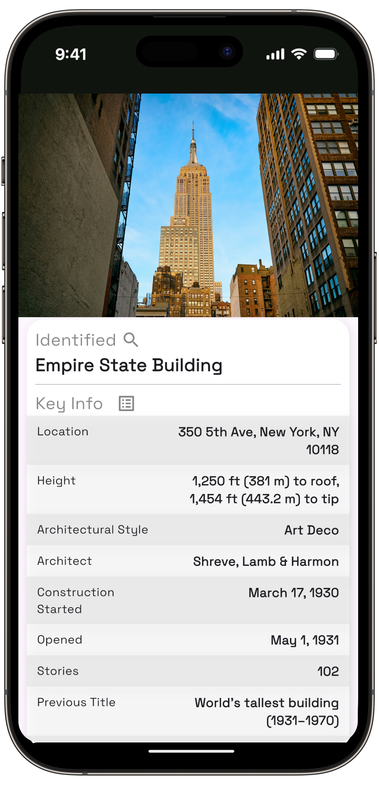
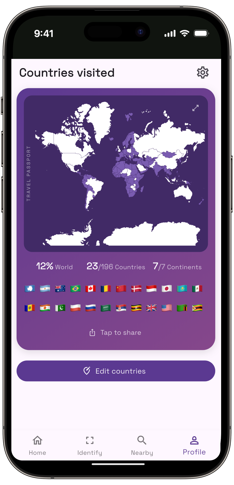
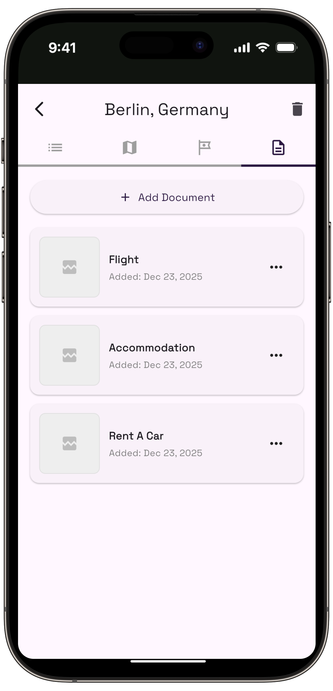
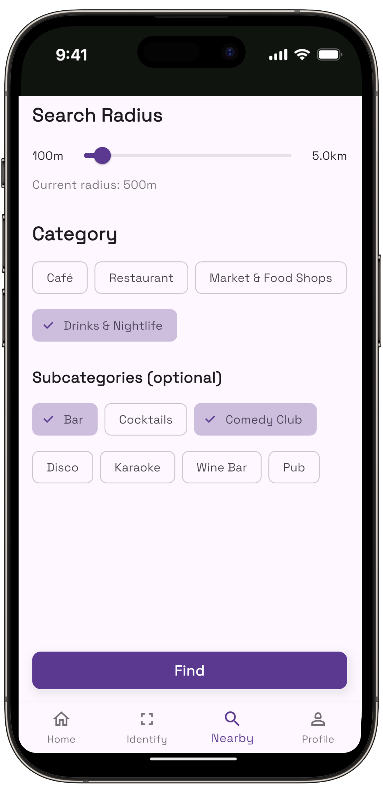

Your Day-by-Day Trip Itinerary,
Ready Before You Arrive.
You pick the city and your arrival and departure times. We plan around them — what to see, when, and in what order — with a pocket guide for each landmark.
Try it on iPhone and iPad. No account needed.


How it works
You pick the dates.
We create the plan.
Pick your city
One city per trip, so the plan stays walkable.
Add your times
Not just the dates — when you actually land and fly out.
Choose your pace
Relaxed, balanced or packed. That sets how full each day gets.
Get your plan
A day-by-day itinerary on a map. Edit and eeorder anything you like.
A Look Inside
Make trip planning our job, not yours.




What's inside
Everything the trip needs, in one app.
Time-Aware Itineraries
Plans are built around your real arrival and departure times, so the first and last day get the hours they actually have — not a full day each.
Everything on a Map
See each day's stops grouped and numbered on an interactive map, so you can tell at a glance whether you've planned a walk or a commute.
Identify What You See
Point your camera at a landmark or a painting and find out what it is, who made it and why it matters — without hunting for a plaque.
Countries You've Visited
Every trip you plan marks the country on your own world map, so the places you've actually been add up into something you can look back on.
Documents in One Place
Boarding passes, hotel confirmations, tickets and reservations live right next to the plan they belong to — findable when you're standing at the gate.
Nearby, Ranked
Find the best restaurants, cafés and nightlife around you at that moment — useful when a plan falls through or dinner sneaks up on you.
Weather at a Glance
The forecast sits alongside each day, so you can see the rain coming and swap the park for the gallery before you're already out in it.
Questions
Before you download.
Is Owlio free?
Yes. Owlio is free to try on the App Store, and you don't need an account or a sign-up to generate a plan.
How does Owlio decide what goes into each day?
It plans around your real arrival and departure times rather than whole dates, so a 4 PM landing gets a half day instead of a full one. Your chosen pace — relaxed, balanced or packed — then sets how much goes into the days in between.
Can I change the plan after it's generated?
Yes. You can reorder stops, remove the ones you don't want and add places you already had in mind.
Does Owlio work for multi-city trips?
Owlio plans one city per trip. That's deliberate — it keeps each day walkable instead of spreading stops across a country. For a two-city trip, create a plan for each city.
Which devices does Owlio run on?
iPhone and iPad, on iOS 15.6 or later. There is no Android version at the moment.
What's in the app besides the itinerary?
Every stop on an interactive map, your boarding passes and tickets stored with the plan, landmark and painting identification through the camera, ranked restaurants and bars nearby, and the daily forecast alongside each day.
 Travel Planner: Owlio
Travel Planner: Owlio
In every plan